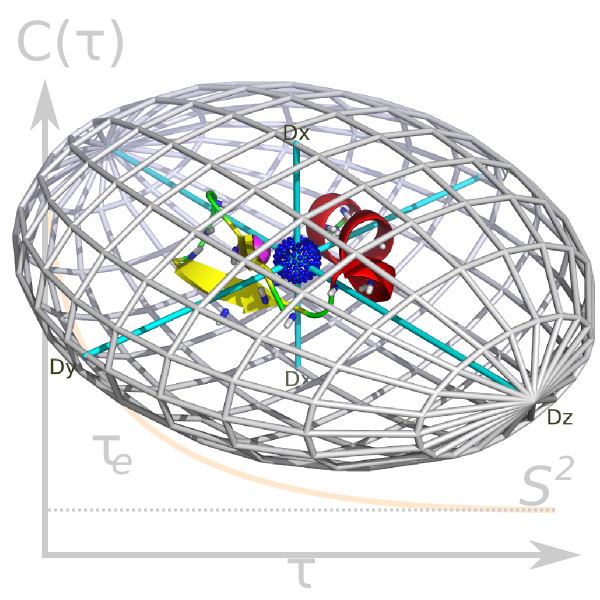

Next:
Model-free theory
Up:
The specific analyses
Previous:
NOE GUI mode -
Contents
Index
Model-free analysis

Subsections
Model-free theory
The chi-squared function -
χ
2
(
θ
)
The transformed relaxation equations -
R
i
(
θ
)
The relaxation equations -
R
i
'(
θ
)
The spectral density functions -
J
(
ω
)
Brownian rotational diffusion
Diffusion as an ellipsoid
Diffusion as a spheroid
Diffusion as a sphere
The model-free models
Model-free optimisation theory
The model-free space
Grid search
Parameter constraints
Diagonal scaling
Optimisation of a single model-free model
Single model-free model script mode - the sample script
Single model-free model script mode - explanation
Optimisation of all model-free models
All model-free models script mode - the sample script
All model-free models script mode - explanation
Model-free model selection
Model-free model selection script mode - the sample script
Model-free model selection script mode - explanation
The methodology of Mandel et al., 1995
The diffusion seeded paradigm
The new model-free optimisation protocol
The new protocol - model-free models
The new protocol - the diffusion tensor
The ellipsoid
The spheroid
The sphere
The local
τ
m
model-free models
Determination of the diffusion tensor from the local
τ
m
parameter
The universal solution
U
Model-free analysis in reverse
The new protocol in the prompt/script UI mode
d'Auvergne protocol script mode - the sample script
d'Auvergne protocol script mode - analysis variables
d'Auvergne protocol script mode - data pipe initialisation
d'Auvergne protocol script mode - setting up the spin systems
d'Auvergne protocol script mode - loading the data
d'Auvergne protocol script mode - deselection
d'Auvergne protocol script mode - relaxation interactions
d'Auvergne protocol script mode - execution
The new protocol in the GUI
d'Auvergne protocol GUI mode - data pipe initialisation
d'Auvergne protocol GUI mode - general setup
d'Auvergne protocol GUI mode - setting up the spin systems
d'Auvergne protocol GUI mode - unresolved spins
d'Auvergne protocol GUI mode - loading the data
d'Auvergne protocol GUI mode - relaxation interactions
d'Auvergne protocol GUI mode - spin isotopes
d'Auvergne protocol GUI mode - the rest of the setup
d'Auvergne protocol GUI mode - execution
d'Auvergne protocol GUI mode - completion
d'Auvergne protocol GUI mode - BMRB deposition
The
relax
user manual
(
PDF
), created 2019-02-19.